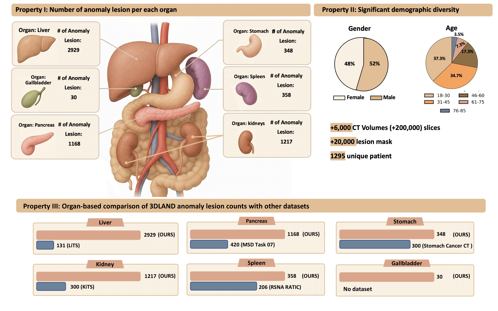
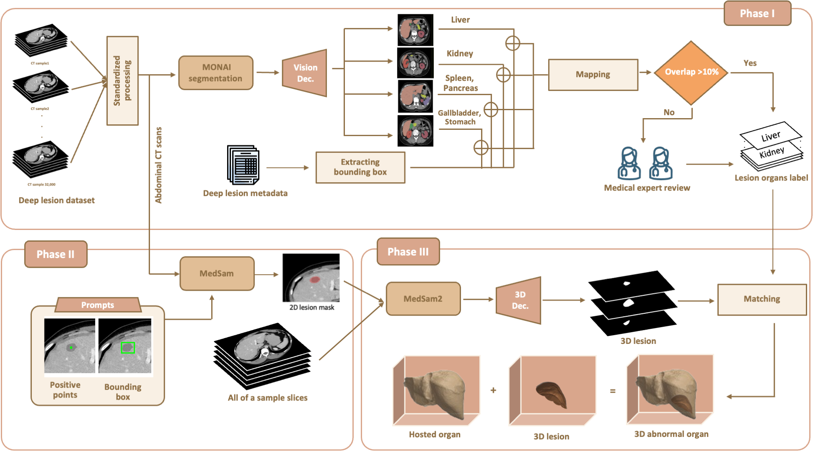
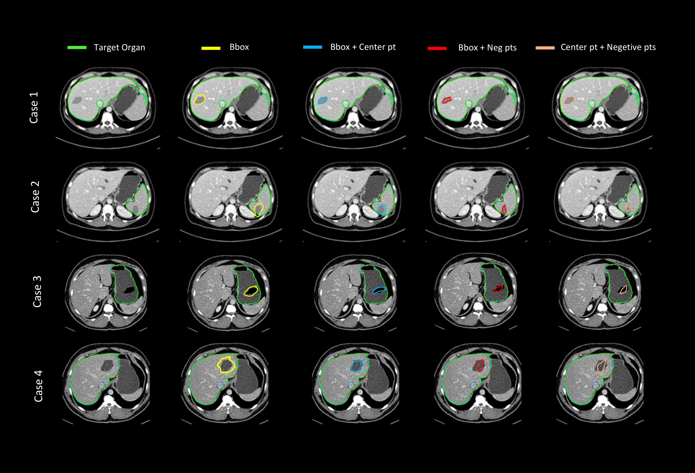

6,000+
CT Volumes
20,000+
3D Lesion Masks
7 Organs
Multi-Organ Coverage
Expert
Validated by Radiologists

Existing medical imaging datasets for abdominal CT often lack three-dimensional annotations, multi-organ coverage, or precise lesion-to-organ associations. To address this gap, we introduce 3DLAND, a large-scale benchmark dataset comprising over 6,000 contrast-enhanced CT volumes with over 20,000 high-fidelity 3D lesion annotations linked to seven abdominal organs: liver, kidneys, pancreas, spleen, stomach, and gallbladder.
Our streamlined three-phase pipeline integrates automated spatial reasoning, prompt-optimized 2D segmentation, and memory-guided 3D propagation, validated by expert radiologists with surface dice scores exceeding 0.75. By providing diverse lesion types and patient demographics, 3DLAND enables scalable evaluation of anomaly detection, localization, and cross-organ transfer learning.
We introduce a streamlined Three-Phase Pipeline to transform 2D bounding boxes into high-fidelity 3D masks.

Lesion-to-Organ Assignment via Spatial Reasoning (MONAI).
Prompt-Optimized 2D Segmentation (MedSAM1 + Center Point).
Memory-Guided 3D Propagation (MedSAM2).
Comparison of segmentation performance using different prompting strategies on real-world clinical cases. Our method (Blue: BBox + Center Point) achieves the most precise boundaries compared to other strategies, reducing over-segmentation and improving localization accuracy.

@inproceedings{3dland2026,
title={3DLAND: 3D Lesion Abdominal Anomaly Localization Dataset},
author={Anonymous},
booktitle={Under Review at ICLR 2026},
year={2026}
}